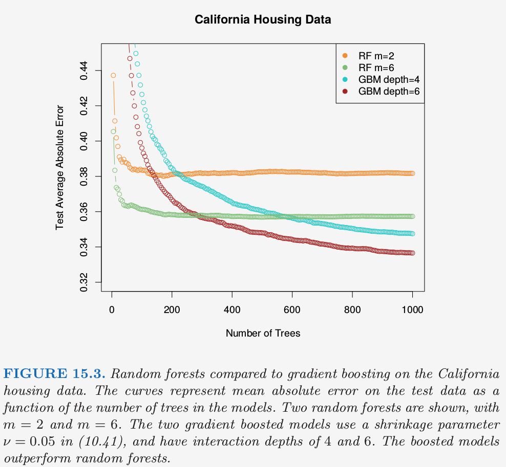
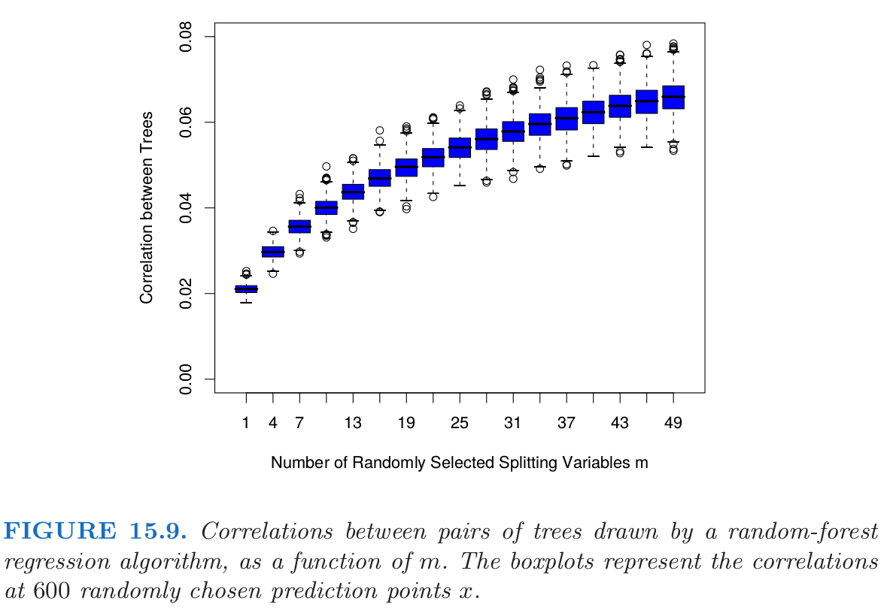
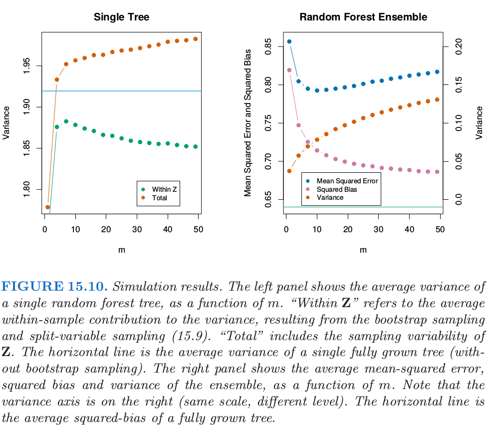
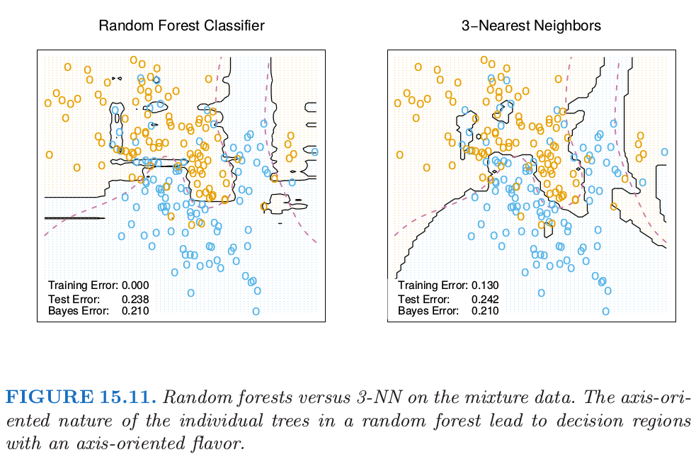
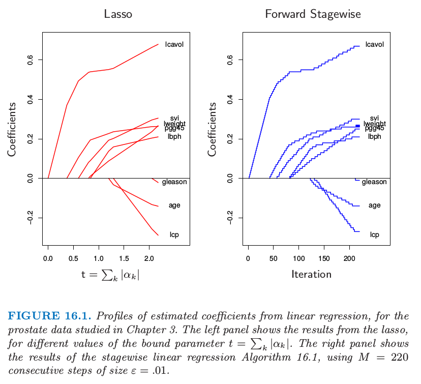
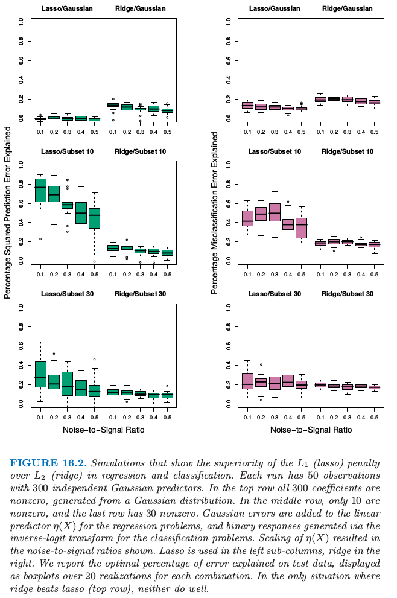
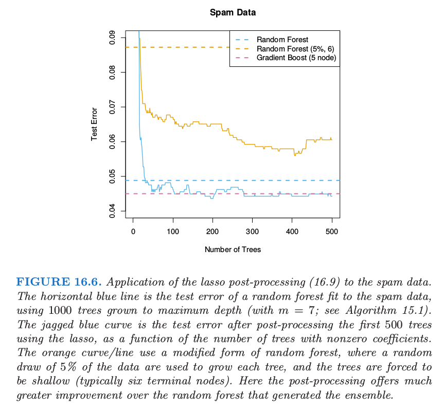
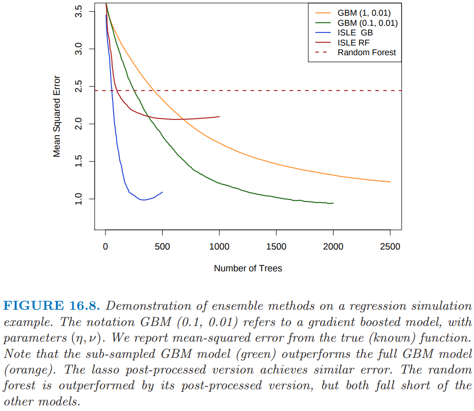
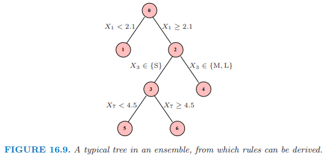

ASL4
Random Forests¶
在这章，我们讨论一些简单的、而且本质上 不依赖具体模型的 (model-free)，并且适用于 分类 (classification) 和 模式识别 (pattern classification) 的方法．因为它们的高度无结构性 (highly unstructured)，所以一般对理解特征和类别结果之间的本质关系没有作用．然而，作为一种黑箱 (black box) 的预测器，它们可以很有效，并且在实际数据问题中的表现经常是最好的．最近邻技巧也可以用于回归，这在 第 2 章 有提到而且对于低维问题效果很好．然而，对于高维特征，最近邻回归中偏差和方差之间的权衡不再表现得像在分类中那样好．
Definition of Random Forests¶
Bagging 的核心思想是对许多有噪声但近似无偏的模型进行平均，也因此降低了方差．树是用于 bagging 的理想模型，因为它们可以捕捉数据中复杂的交叉项，而且如果树长得足够深的话，会有相对较低的偏差．因为树是充满噪声的，所以通过平均可以很大程度地改善它们．而且，因为 bagging 中产生的每棵树是同分布的，B 棵这样的树的平均的期望与它们中的任一个是相同的．这意味着经过 bagged 的树的偏差与单个(bootstrap)树的偏差是一样的，而且唯一改善的希望是通过降低方差．这与 boosting 是相反的，在 boosting 中树以一种自适应的方式减小偏差，因此不是同分布的．
- Random forests (Breiman 2001) build a large collection of de-correlated trees and then averages their predictions.
- On many problems
- performance of random forest \approx performance of boosted tree
- Random forests are easier to train and tune than boosted trees
Random Forests: Regresson / Classification
- For b=1 to B
- Draw bootstrap sample Z^{*} of size N from the training data
- Grow a random forest tree T_{b} using Z^{*} by recursively
- Select m features from the p features at random
- Pick the best variable / split point among the m
- Split the node into two child nodes
- Output the ensemble of trees \left\{T_{b}\right\}_{1}^{B}
Make a prediction at a new point x
Motivation - Variances of Average¶
Define, where each X_{i} \sim p(X)
If X_{i}{ }^{\prime} s are independent of each other and \operatorname{Var}\left(X_{i}\right)=\sigma^{2}, then
If X_{i}{ }^{\prime} s are not independent and have pairwise correlation \rho, then
Note: as B \rightarrow \infty, \operatorname{Var}\left(S_{B}\right) \rightarrow \rho \sigma^{2} Therefore, higher correlation limits the benefits of averaging
- Typical values for m are \sqrt{p} or even as low as 1
- Reducing m will reduce the correlation between trees
- Trees benefit a lot from the randomization as they have low-bias and high variance
- Random forests do remarkably well, with very little tuning required

Details of Random Forests¶
Recommendations for the parameters in the random forest. 当然实际用的时候还是作为超参数调整比较好.
- Regression: m=\lfloor\sqrt{p}\rfloor and n_{\min }=5
- Classification: m=\lfloor p / 3\rfloor and n_{\min }=1
Out of Bag Samples¶
For each observation z_{i}=\left(x_{i}, y_{i}\right), its out-of-bag estimate is
where \mathcal{B}_{i} is the index of the bootstrap samples in which z_{i} did not appear
- The OOB error estimate \approx \mathrm{n}-fold cross validation
- Therefore, can predict test-error along the way without using cross-validation
OOB 误差估计几乎等价于通过 N 折交叉验证得到的估计；见练习 15.2．因此与许多其它的非线性估计量不同，随机森林可以逐步拟合，同时交叉验证也将沿着拟合进度逐步进行．一旦OOB误差稳定，训练可以终止．
另外一个断言是随机森林不会过拟合数据．
Note: classifier are much less sensitive to variance and the effect of over-fitting is seldom seen with random-forest classification
Analysis of Random Forests¶
Variance \& De-correlation Effect¶
The limiting form of the random forest regression estimate is (树的数量趋向无穷)
The variance of this estimate at x is
where
- \rho(x) is the sampling correlation between any pair of trees
where \theta_{1}(Z) and \theta_{2}(Z) are a randomly drawn pair of random forests grown to the randomly sampled Z
- \sigma^{2}(x) is the sampling variance of any single randomly drawn tree
The variability averaged over these calculations is both
- conditional on Z : due to bootstrap sample and feature sampling at each split
- a result of the sampling variability of Z itself
Note: the conditional covariance of a pair of tree fits at x is 0 , because bootstrap and feature sampling is i.i.d.
下图展示了 Correlation Between Trees. 可见 所随机选择的特征数量 m 越少, 所训练的树之间的相关性也越小.

下面左图是单颗树的方差. Variance of Single Tree Predictors
The total variance can be decomposed into two parts (即全方差率(law of total variance)或条件方差公式(conditional variance formulas), see here)
第二项是 \mathbf{Z} 间方差一一随机化的结果, 会随着 m 降低而增大. 第一项实际上是随机森林集（显示在图的右边) 中的采样方差, 会随着 m 降低而降低.
单棵树的方差在 m 的大部分取值范围内不会有明显的改变, 因此根据式 (15.5), 总体的随机森林集的方差显著比树的方差要低.

Bias¶
和 bagging 中一样, 随机森林的偏差与任意单棵采样后的树 T(x ; \Theta(\mathbf{Z})) 一样:
因为随机化和减小的样本空间的约束, 这一般比由 \mathbf{Z} 生成的末剪枝的树的偏差的绝对值要大. 因 此通过 bagging 或随机森林对预测带来的改善仅仅是方差降低的结果.
偏差的所有讨论都依赖于末知的真实函数. 图 15.10 的右图展示了我们可加模拟模型的平方偏差 (通过 500 次实现估计得到). 尽管对于不同的模型, 偏差曲线的形状(shape)和变化率(rate)可能 不同, 但是一般的趋势是当 m 降低时, 偏差增大. 图中展示的是均方误差, 并且我们在 m 的选择 中看到了经典的偏差-方差的权衡. 对所有的 m, 随机森林的平方偏差比单棵树的平方偏差 (水平线) 要大.
Random Forests & Nearest Neighbour¶

随机森林分类器与 k 最近邻分类器 (13.3 节) 有许多相同的地方; 实际上前者是后者的加权版 本. 因为每棵树生长到最大时, 对于特定的 \Theta^{*}, T\left(x ; \Theta^{*}(\mathbf{Z})\right) 是其中一个训练样本的响应变量的 值. 生成树算法任意从中选择最有信息量的预测量, 寻找到该观测的最优路径. 平均的过程是对训 练响应变量赋予权重, 这最终对预测值进行投票. 因此通过随机森林的投票机制, 那些靠近目标点 的观测赋予了权重一一一个等价核一一这些结合在一起形成了分类边界.
Ensemble Learning¶
集成学习 (ensemble learning) 的思想是通过结合一系列简单基础模型的优点来建立一个预测模型．我们已经看到很多这类的例子．
8.7 节的 bagging 和第 15 章的随机森林都是用于分类的集成学习的方法，其中树的每个 committee 对预测的类别都有一个投票．第 10 章中的 boosting 一开始也是以一种 committee 的方法提出来的，尽管不同于随机森林，weak learners 的 committee 随着时间不断进化，并且成员进行带有权重的投票．Stacking（8.8 节）是结合一系列拟合模型优点的新方式．事实上，可以将任何字典方法看成集成学习，其中基函数充当 弱学习器 (weak learners)，比如回归样条．
非参回归的贝叶斯方法也可以看成是集成学习的方法：关于参数设定的后验分布，对一系列大量的候选模型进行平均（比如，Neal and Zhang，20061）．
集成学习可以分成两个任务：从训练集中建立基学习器的总体，然后结合它们形成复合预测．这章中我们进一步讨论 boosting 技术；它通过在 weak learners 的高维空间中通过一个正规化和有监督的搜索来建立集成模型．
Boosting & Regularization Paths¶
Ensemble learning: build a prediction model by combining the strengths of a collection of simpler base models
Examples of ensemble methods
- Bagging
- Boosting
- Stacking
- Dictionary methods
Ensemble consists of two tasks
- Build a population of base learners from training data
- Combine base learners to form a composite predictor
Penalized Regression¶
Consider the dictionary of all J-terminal node regression trees T=\left\{T_{k}\right\} that could be realized by the training data. 注意这里的目标是要计算这些基函数的权重向量.
The linear model is
Estimation of \alpha ‘s from training data requires regularization
- Ridge regression: J(\alpha)=\sum_{k=1}^{|T|}\left|\alpha_{k}\right|^{2}
- Lasso: J(\alpha)=\sum_{k=1}^{|T|}\left|\alpha_{k}\right|
施加惩罚项可以使得参数分布更稀疏.
- Solution to the lasso solution with moderate to large \lambda gives a sparse \alpha
- If |T| is very large, then solving the optimization with the lasso penalty is not possible
- A feasible forward stagewise strategy exists that closely approximates the effect of lasso 存在可行的向前逐步策略，对 lasso 的效果有非常好的近似，并且与增强和向前逐步算法 10.2 非常相似
Forward Stagewise Linear Regression¶
- Initialize \tilde{\alpha}_{k}, k=1, \ldots, K. Set \epsilon>0 small and M large
- For m=1 to M :
- \left(\beta^{*}, k^{*}\right)=\operatorname{argmin}_{\beta, k} \sum_{i=1}^{n}\left(y_{i}-\sum_{l=1}^{|T|} \tilde{\alpha}_{l} T_{l}\left(x_{i}\right)-\beta T_{k}\left(x_{i}\right)\right)^{2}
- \tilde{\alpha}_{k^{*}} \rightarrow \tilde{\alpha}_{k^{*}}+\epsilon \operatorname{sign}\left(\beta^{*}\right)
- Output
可以看到 Forward Stagewise Linear Regression 和 lasso 的结果非常相似.

The “Bet on Sparsity” Principle¶
- Minimizing a loss function with a L_{1} penalty is slow and involves searching through the model space
- The L_{2} penalty is computationally much easier
- However, L_{1} penalty is better suited to sparse situations
Consider the example
- 10000 data points
- Model is linear combination of a million trees
- If the coefficients arise from a Gaussian distribution, better to use L_{2} penalty in ridge regression
- But if there are only a small number of non-zero coefficients, L_{1} penalty will work better
两种情况下:
- In the dense scenario, L_{2} best but will fail as too little data to estimate 1 million coefficients
- In the sparse setting, L_{1} penalty can do well but L_{2} penalty will fail
Take home message: For high-dimensional problems ( “bet on sparsity” 准则) Use a procedure that does well in sparse problems, since no procedure does well in dense problems. 采用在稀疏问题中表现得好的方法，因为没有方法能在稠密问题中表现得好．
comment need some qualification:
- Sparseness/denseness depends on target function (的数量) and dictionary T
- Notion of sparse vs dense is relative to size of training data and noise-to-signal ratio. 越大的训练集允许我们估计更小标准差的系数．同样地，在小 NSR 的情形中，当给定样本大小我们能识别出相对于大 NSR 情形下更多的非零系数．
- More training data \rightarrow can estimate coef with smaller se
- small NSR \rightarrow can identify more non-zero coef
- Increase the size of the dictionary \rightarrow probable sparse representation, harder search problem, high variance. 增大字典集的大小可能导出我们函数的更稀疏的表示，但是寻找问题会变得更困难，导致更高的方差．

Learning Ensembles¶
利用前面章节的知识得到更高效的集成模型．How should one learn functions of the form
$$ f(x)=\alpha_{0}+\sum_{T_{k} \in T} \alpha_{k} T_{k}(x) $$ where T is a dictionary of basis functions - typically trees
(上一节中，我们论证带收缩的 gradient boosting 会在树的空间中拟合 L_1 正则化单调路径.)
Friedman and Popescu (2003) Suggested approach, 分两个步骤
- Construct a finite dictionary T_{1}=\left\{T_{1}(x), \ldots, T_{M}(x)\right\} from the training data
- Build a family of functions f_{\lambda}(x) by fitting a lasso path
- Can view this as a way to post-processing a boosted trees or random forest
在这种简单的形式里面, 将 \mathcal{T}_{L} 看成是由 gradient boosting 算法或者随机森林算法得到的树的集 合, 该模型可以看成是 boosting 或者是随机森林的某种 post-processing 方式. 通过对这些树进行 lasso 路径拟合, 一般我们会得到更加简化的集合, 它会大大减少末来预测的计算量和存储量. 在 下一节, 我们将讨论这种方法的变种, 进而降低 \mathcal{T}_{L} 的相关性, 并且提高 lasso post processor 的表 现.

Learning a Good Ensemble¶
- Not all ensembles T_{L} will perform well with post-processing
- For the ensemble of basis functions T_{L}, we want
- a collection that offers good coverage in the places needed
- and are sufficiently different from each other to allow the post-processing to be effective
- Friedman and Popescu suggested an ensemble-generation algorithm
Importance sampled learning ensemble (ISLE)¶
从 数值积分 (numerical quadrature) 和 重要性采样 (importance sampling) 中获得启发
- f_{0}(x)=\operatorname{argmin}_{c} \sum_{i=1}^{n} L\left(y_{i}, c\right)
- For m=1 to M
- \gamma_{m}=\operatorname{argmin}_{\gamma} \sum_{i \in S_{m}(\eta)} L\left(y_{i}, f_{m-1}\left(x_{i}\right)+b\left(x_{i} ; \gamma\right)\right)
- f_{m}(x)=f_{m-1}(x)+\nu b(x ; \gamma)
- T_{I S L E}=\left\{b\left(x ; \gamma_{1}\right), b\left(x ; \gamma_{2}\right), \ldots, b\left(x ; \gamma_{M}\right)\right\}
where
- \nu \in[0,1] introduces memory into the randomization process 对随机过程引入 记忆, 其越大，越能避免 b(x; \gamma) 与之前找到的一致
- S_{m}(\eta) refers to a subsample \eta \cdot n, \eta \in[0,1] of the training observations 训练观测值的子样本
- Suggested values of \nu=0.1 are \eta<0.5, and for large n, pick \eta \approx \frac{1}{\sqrt{n}}
很多随机算法都是上述算法的特殊情况 A number of familiar randomization schemes are special cases of this algorithm
- Bagging: \eta=1, sample with replacement and \nu=1
- Random forest: sampling is similar, with more randomness introduced by the selection of the splitting variable
- Gradient boosting: with shrinkage uses \eta=1 (but does not produce sufficient width \sigma)
- Stochastic gradient boosting: follows the recipe exactly

- Consider this function of X \sim U[0,1]^{100} (最后 65 个元素是噪声变量)
- The response variable, with \sigma=1.3, is
- Estimate f(X) from a training set of size n=1000
- Results: n_{\text {test }}=600 and averaged over 20 different training sets
Rule Ensemble¶

图 16.9 描述了一棵小树, 带编号的结点. 下面的规则可以从这棵树导出:
关于规则 1,4,5 和 6 的线性回归等价于树本身（练习 16.3 ）；因此 (16.14) 是这棵树 过充分 (over-complete) 的基. 对于一个 ensemble \mathcal{T}, 我们可以构造规则的 mini-ensemble \mathcal{T}_{R U L E}^{m}, 并且然后结合形成更大的 ensemble
然后像其它 ensemble 一样处理, 并且通过 lasso 或者类似的正则化过程进行 post-processed.
对于从更复杂的树导出规则的这种方式有许多优点:
- 模型空间被增大了, 并且可以得到更好的表现. Space of possible models enlaregd
- 规则比树更好解释, 所以有更简单模型的潜力. Rules are easier to interpret than trees
- 经常通过分开加入变量 X_{j} 来增广 \mathcal{T}_{R U L E}, 因此允许 ensemble 能够很好地建立线性模型.